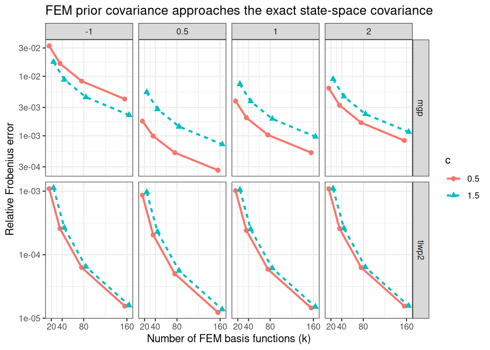
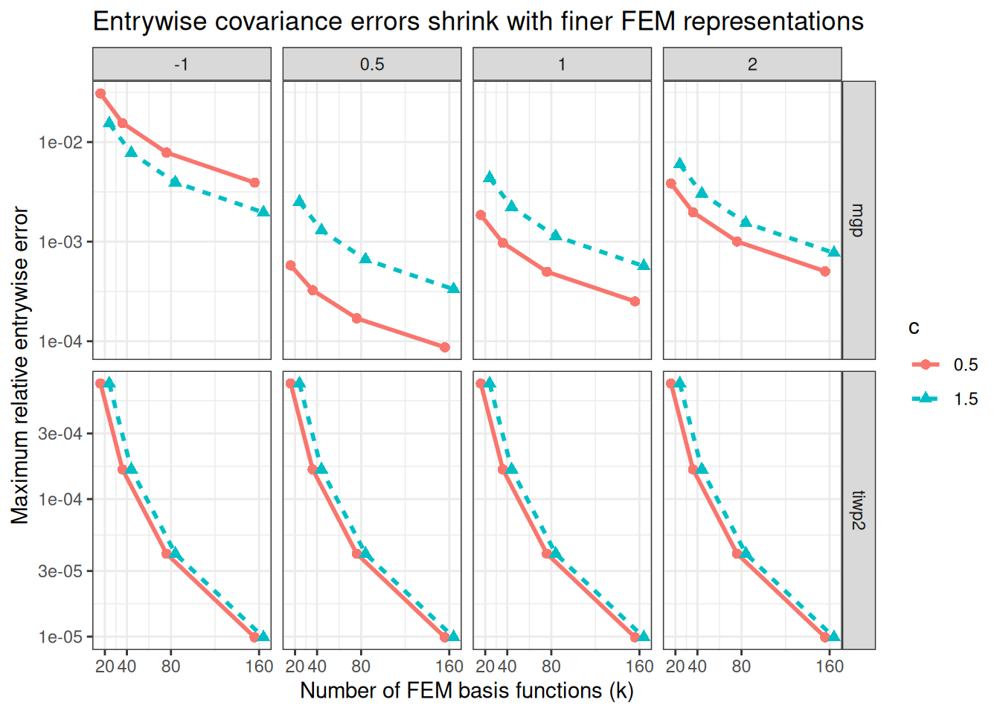

Last updated: 2026-10-04
Checks: 7 0
Knit directory: near_monotone_smoothing/
This reproducible R Markdown analysis was created with workflowr (version 1.7.2). The Checks tab describes the reproducibility checks that were applied when the results were created. The Past versions tab lists the development history.
Great! Since the R Markdown file has been committed to the Git repository, you know the exact version of the code that produced these results.
Great job! The global environment was empty. Objects defined in the global environment can affect the analysis in your R Markdown file in unknown ways. For reproduciblity it’s best to always run the code in an empty environment.
The command set.seed(20240619) was run prior to running
the code in the R Markdown file. Setting a seed ensures that any results
that rely on randomness, e.g. subsampling or permutations, are
reproducible.
Great job! Recording the operating system, R version, and package versions is critical for reproducibility.
Nice! There were no cached chunks for this analysis, so you can be confident that you successfully produced the results during this run.
Great job! Using relative paths to the files within your workflowr project makes it easier to run your code on other machines.
Great! You are using Git for version control. Tracking code development and connecting the code version to the results is critical for reproducibility.
The results in this page were generated with repository version 84a9604. See the Past versions tab to see a history of the changes made to the R Markdown and HTML files.
Note that you need to be careful to ensure that all relevant files for
the analysis have been committed to Git prior to generating the results
(you can use wflow_publish or
wflow_git_commit). workflowr only checks the R Markdown
file, but you know if there are other scripts or data files that it
depends on. Below is the status of the Git repository when the results
were generated:
Ignored files:
Ignored: BayesGP
Unstaged changes:
Modified: output/iwp_prior_covariance_convergence_metrics.csv
Note that any generated files, e.g. HTML, png, CSS, etc., are not included in this status report because it is ok for generated content to have uncommitted changes.
These are the previous versions of the repository in which changes were
made to the R Markdown
(analysis/prior_covariance_convergence.rmd) and HTML
(docs/prior_covariance_convergence.html) files. If you’ve
configured a remote Git repository (see ?wflow_git_remote),
click on the hyperlinks in the table below to view the files as they
were in that past version.
| File | Version | Author | Date | Message |
|---|---|---|---|---|
| html | 2ba44ec | Ziang Zhang | 2026-10-04 | Build site. |
| html | 5eaa7ee | Ziang Zhang | 2026-10-03 | Build site. |
| Rmd | e65c248 | Ziang Zhang | 2026-10-03 | Initial commit of near-monotone smoothing workflowr project |
This notebook checks whether the FEM approximations for
mGP and tIWP2 converge to the exact prior
covariance implied by the exact state-space construction.
The comparison focuses on the stochastic process covariance only. In other words, the boundary/global polynomial term is held fixed at zero so that the exact and FEM paths are compared on the same latent process object.
library(tidyverse)── Attaching core tidyverse packages ──────────────────────── tidyverse 2.0.0 ──
✔ dplyr 1.2.1 ✔ readr 2.2.0
✔ forcats 1.0.1 ✔ stringr 1.6.0
✔ ggplot2 4.0.3 ✔ tibble 3.3.1
✔ lubridate 1.9.3 ✔ tidyr 1.3.2
✔ purrr 1.2.2
── Conflicts ────────────────────────────────────────── tidyverse_conflicts() ──
✖ dplyr::filter() masks stats::filter()
✖ dplyr::lag() masks stats::lag()
ℹ Use the conflicted package (<http://conflicted.r-lib.org/>) to force all conflicts to become errorslibrary(Matrix)
Attaching package: 'Matrix'
The following objects are masked from 'package:tidyr':
expand, pack, unpackdevtools::load_all("BayesGP", quiet = TRUE)Registered S3 method overwritten by 'LaplacesDemon':
method from
print.laplace aghqWe use an irregular evaluation grid and vary both the curvature
parameter a and the shift parameter c.
For mGP, increasing the FEM basis size alone is not the
full refinement path, because Compute_Prec() itself is
built through numerical integration. So the mGP experiment
refines both:
k,accuracy.For tIWP2, the FEM path is an O-spline construction on
the transformed scale, so k alone is the relevant
refinement parameter here.
evaluation_grid <- c(0.25, 0.45, 0.70, 1.05, 1.40, 1.80, 2.30, 2.90, 3.50, 4.20)
k_values <- c(20, 40, 80, 160)
parameter_grid <- expand.grid(
model = c("mgp", "tiwp2"),
a = c(0.5, 1, 2, -1),
c_shift = c(0.5, 1.5),
stringsAsFactors = FALSE
) %>%
as_tibble()The exact covariance is built by inverting the exact state-space precision and extracting the function-value block.
The FEM covariance is built directly from the FEM design matrix and precision matrix:
\[ \Sigma_{\mathrm{FEM}} = B Q^{-1} B^\top. \]
extract_function_block <- function(covariance_matrix){
covariance_matrix[
seq(1, nrow(covariance_matrix), by = 2),
seq(1, ncol(covariance_matrix), by = 2),
drop = FALSE
]
}
build_exact_prior_covariance <- function(model_name, x, a, c_shift){
if(model_name == "mgp"){
precision <- as.matrix(mGP_joint_prec(t_vec = x, a = a, c = c_shift))
return(extract_function_block(solve(precision)))
}
if(model_name == "tiwp2"){
transform <- make_boxcox_transform(a = a, c = c_shift, normalized = TRUE, ref_location = 0)
transformed_x <- transform(x)
precision <- as.matrix(IWP_joint_prec(t_vec = transformed_x, p = 2))
return(extract_function_block(solve(precision)))
}
stop("Unsupported model.")
}
build_fem_prior_covariance <- function(model_name, x, a, c_shift, k,
mgp_accuracy = 0.002){
if(model_name == "mgp"){
region <- range(c(0, x))
design <- as.matrix(
Compute_Design(x = x, k = k, region = region, boundary = TRUE)
)
precision <- as.matrix(
Compute_Prec(
a = a,
c = c_shift,
k = k,
region = region,
accuracy = mgp_accuracy,
boundary = TRUE
)
)
return(design %*% solve(precision, t(design)))
}
if(model_name == "tiwp2"){
transform <- make_boxcox_transform(a = a, c = c_shift, normalized = TRUE, ref_location = 0)
transformed_x <- transform(x)
transformed_knots <- seq(0, max(transformed_x), length.out = k)
transformed_data <- data.frame(z = transformed_x)
temp_instance <- methods::new(
"iwp",
response_var = as.name("y"),
smoothing_var = as.name("z"),
order = 2,
knots = transformed_knots,
k = k,
observed_x = sort(transformed_x),
sd.prior = list(),
psd.prior = list(),
boundary.prior = list(),
data = transformed_data,
X = matrix(0, nrow = 0, ncol = 0),
B = matrix(0, nrow = 0, ncol = 0),
P = matrix(0, nrow = 0, ncol = 0),
initial_location = 0,
region = range(c(0, transformed_x))
)
design <- as.matrix(local_poly(temp_instance))
precision <- as.matrix(compute_weights_precision(temp_instance))
return(design %*% solve(precision, t(design)))
}
stop("Unsupported model.")
}
frobenius_relative_error <- function(approximate_cov, exact_cov){
sqrt(sum((approximate_cov - exact_cov)^2) / sum(exact_cov^2))
}
max_relative_error <- function(approximate_cov, exact_cov){
max(abs(approximate_cov - exact_cov)) / max(abs(exact_cov))
}
variance_relative_error <- function(approximate_cov, exact_cov){
max(abs(diag(approximate_cov) - diag(exact_cov))) / max(abs(diag(exact_cov)))
}
format_covariance_table <- function(table_df){
table_df %>%
mutate(
fem_accuracy = if_else(
model == "mgp",
formatC(fem_accuracy, format = "fg", digits = 4),
"not used"
),
a = formatC(a, format = "fg", digits = 4),
c_shift = formatC(c_shift, format = "fg", digits = 4),
frobenius_rel_error = signif(frobenius_rel_error, 6),
max_rel_error = signif(max_rel_error, 6),
variance_rel_error = signif(variance_rel_error, 6)
) %>%
rename(
model = model,
a = a,
c = c_shift,
k = k,
`FEM accuracy` = fem_accuracy,
`Relative Frobenius error` = frobenius_rel_error,
`Max relative error` = max_rel_error,
`Variance relative error` = variance_rel_error
)
}For tiwp2, the column labelled FEM accuracy
is shown as not used rather than NA, because
that FEM construction does not rely on the separate numerical
integration step used by Compute_Prec() for
mGP.
comparison_results <- parameter_grid %>%
mutate(
exact_covariance = pmap(
list(model, a, c_shift),
~ build_exact_prior_covariance(..1, x = evaluation_grid, a = ..2, c_shift = ..3)
)
) %>%
select(-exact_covariance) %>%
tidyr::crossing(k = k_values) %>%
mutate(
fem_accuracy = if_else(model == "mgp", 0.4 / k, NA_real_)
) %>%
mutate(
exact_covariance = pmap(
list(model, a, c_shift),
~ build_exact_prior_covariance(..1, x = evaluation_grid, a = ..2, c_shift = ..3)
),
fem_covariance = pmap(
list(model, a, c_shift, k, fem_accuracy),
~ build_fem_prior_covariance(
..1,
x = evaluation_grid,
a = ..2,
c_shift = ..3,
k = ..4,
mgp_accuracy = ifelse(is.na(..5), 0.002, ..5)
)
),
frobenius_rel_error = map2_dbl(fem_covariance, exact_covariance, frobenius_relative_error),
max_rel_error = map2_dbl(fem_covariance, exact_covariance, max_relative_error),
variance_rel_error = map2_dbl(fem_covariance, exact_covariance, variance_relative_error)
) %>%
select(model, a, c_shift, k, fem_accuracy, frobenius_rel_error, max_rel_error, variance_rel_error)
knitr::kable(
format_covariance_table(comparison_results),
caption = "Prior covariance comparison across model, prior setting, and FEM refinement level.",
align = c("l", "r", "r", "r", "l", "r", "r", "r")
)| model | a | c | k | FEM accuracy | Relative Frobenius error | Max relative error | Variance relative error |
|---|---|---|---|---|---|---|---|
| mgp | -1 | 0.5 | 20 | 0.02 | 0.0326342 | 0.0307929 | 0.0307929 |
| mgp | -1 | 0.5 | 40 | 0.01 | 0.0164757 | 0.0155447 | 0.0155447 |
| mgp | -1 | 0.5 | 80 | 0.005 | 0.0083148 | 0.0078446 | 0.0078446 |
| mgp | -1 | 0.5 | 160 | 0.0025 | 0.0041530 | 0.0039182 | 0.0039182 |
| mgp | -1 | 1.5 | 20 | 0.02 | 0.0174590 | 0.0153616 | 0.0153616 |
| mgp | -1 | 1.5 | 40 | 0.01 | 0.0088394 | 0.0077761 | 0.0077761 |
| mgp | -1 | 1.5 | 80 | 0.005 | 0.0044685 | 0.0039305 | 0.0039305 |
| mgp | -1 | 1.5 | 160 | 0.0025 | 0.0022336 | 0.0019648 | 0.0019648 |
| mgp | 0.5 | 0.5 | 20 | 0.02 | 0.0017664 | 0.0005770 | 0.0005770 |
| mgp | 0.5 | 0.5 | 40 | 0.01 | 0.0009905 | 0.0003252 | 0.0003252 |
| mgp | 0.5 | 0.5 | 80 | 0.005 | 0.0005196 | 0.0001697 | 0.0001697 |
| mgp | 0.5 | 0.5 | 160 | 0.0025 | 0.0002633 | 0.0000870 | 0.0000870 |
| mgp | 0.5 | 1.5 | 20 | 0.02 | 0.0054093 | 0.0025093 | 0.0025093 |
| mgp | 0.5 | 1.5 | 40 | 0.01 | 0.0028043 | 0.0013004 | 0.0013004 |
| mgp | 0.5 | 1.5 | 80 | 0.005 | 0.0014288 | 0.0006616 | 0.0006616 |
| mgp | 0.5 | 1.5 | 160 | 0.0025 | 0.0007167 | 0.0003326 | 0.0003326 |
| mgp | 1 | 0.5 | 20 | 0.02 | 0.0038376 | 0.0018512 | 0.0018512 |
| mgp | 1 | 0.5 | 40 | 0.01 | 0.0020175 | 0.0009736 | 0.0009736 |
| mgp | 1 | 0.5 | 80 | 0.005 | 0.0010343 | 0.0004983 | 0.0004983 |
| mgp | 1 | 0.5 | 160 | 0.0025 | 0.0005200 | 0.0002512 | 0.0002512 |
| mgp | 1 | 1.5 | 20 | 0.02 | 0.0074224 | 0.0043707 | 0.0043707 |
| mgp | 1 | 1.5 | 40 | 0.01 | 0.0037961 | 0.0022341 | 0.0022341 |
| mgp | 1 | 1.5 | 80 | 0.005 | 0.0019261 | 0.0011327 | 0.0011327 |
| mgp | 1 | 1.5 | 160 | 0.0025 | 0.0009646 | 0.0005678 | 0.0005678 |
| mgp | 2 | 0.5 | 20 | 0.02 | 0.0063418 | 0.0038394 | 0.0038394 |
| mgp | 2 | 0.5 | 40 | 0.01 | 0.0032628 | 0.0019747 | 0.0019747 |
| mgp | 2 | 0.5 | 80 | 0.005 | 0.0016598 | 0.0010038 | 0.0010038 |
| mgp | 2 | 0.5 | 160 | 0.0025 | 0.0008320 | 0.0005036 | 0.0005036 |
| mgp | 2 | 1.5 | 20 | 0.02 | 0.0089832 | 0.0059708 | 0.0059708 |
| mgp | 2 | 1.5 | 40 | 0.01 | 0.0045727 | 0.0030378 | 0.0030378 |
| mgp | 2 | 1.5 | 80 | 0.005 | 0.0023166 | 0.0015382 | 0.0015382 |
| mgp | 2 | 1.5 | 160 | 0.0025 | 0.0011594 | 0.0007703 | 0.0007703 |
| tiwp2 | -1 | 0.5 | 20 | not used | 0.0010932 | 0.0006925 | 0.0006925 |
| tiwp2 | -1 | 0.5 | 40 | not used | 0.0002580 | 0.0001644 | 0.0001644 |
| tiwp2 | -1 | 0.5 | 80 | not used | 0.0000630 | 0.0000401 | 0.0000401 |
| tiwp2 | -1 | 0.5 | 160 | not used | 0.0000156 | 0.0000099 | 0.0000099 |
| tiwp2 | -1 | 1.5 | 20 | not used | 0.0011220 | 0.0006925 | 0.0006925 |
| tiwp2 | -1 | 1.5 | 40 | not used | 0.0002652 | 0.0001644 | 0.0001644 |
| tiwp2 | -1 | 1.5 | 80 | not used | 0.0000647 | 0.0000401 | 0.0000401 |
| tiwp2 | -1 | 1.5 | 160 | not used | 0.0000160 | 0.0000099 | 0.0000099 |
| tiwp2 | 0.5 | 0.5 | 20 | not used | 0.0008643 | 0.0006925 | 0.0006925 |
| tiwp2 | 0.5 | 0.5 | 40 | not used | 0.0002054 | 0.0001644 | 0.0001644 |
| tiwp2 | 0.5 | 0.5 | 80 | not used | 0.0000501 | 0.0000401 | 0.0000401 |
| tiwp2 | 0.5 | 0.5 | 160 | not used | 0.0000124 | 0.0000099 | 0.0000099 |
| tiwp2 | 0.5 | 1.5 | 20 | not used | 0.0009633 | 0.0006925 | 0.0006925 |
| tiwp2 | 0.5 | 1.5 | 40 | not used | 0.0002291 | 0.0001644 | 0.0001644 |
| tiwp2 | 0.5 | 1.5 | 80 | not used | 0.0000558 | 0.0000401 | 0.0000401 |
| tiwp2 | 0.5 | 1.5 | 160 | not used | 0.0000138 | 0.0000099 | 0.0000099 |
| tiwp2 | 1 | 0.5 | 20 | not used | 0.0010176 | 0.0006925 | 0.0006925 |
| tiwp2 | 1 | 0.5 | 40 | not used | 0.0002415 | 0.0001644 | 0.0001644 |
| tiwp2 | 1 | 0.5 | 80 | not used | 0.0000590 | 0.0000401 | 0.0000401 |
| tiwp2 | 1 | 0.5 | 160 | not used | 0.0000146 | 0.0000099 | 0.0000099 |
| tiwp2 | 1 | 1.5 | 20 | not used | 0.0010536 | 0.0006925 | 0.0006925 |
| tiwp2 | 1 | 1.5 | 40 | not used | 0.0002508 | 0.0001644 | 0.0001644 |
| tiwp2 | 1 | 1.5 | 80 | not used | 0.0000613 | 0.0000401 | 0.0000401 |
| tiwp2 | 1 | 1.5 | 160 | not used | 0.0000151 | 0.0000099 | 0.0000099 |
| tiwp2 | 2 | 0.5 | 20 | not used | 0.0010902 | 0.0006925 | 0.0006925 |
| tiwp2 | 2 | 0.5 | 40 | not used | 0.0002580 | 0.0001644 | 0.0001644 |
| tiwp2 | 2 | 0.5 | 80 | not used | 0.0000629 | 0.0000401 | 0.0000401 |
| tiwp2 | 2 | 0.5 | 160 | not used | 0.0000155 | 0.0000099 | 0.0000099 |
| tiwp2 | 2 | 1.5 | 20 | not used | 0.0010988 | 0.0006925 | 0.0006925 |
| tiwp2 | 2 | 1.5 | 40 | not used | 0.0002605 | 0.0001644 | 0.0001644 |
| tiwp2 | 2 | 1.5 | 80 | not used | 0.0000634 | 0.0000401 | 0.0000401 |
| tiwp2 | 2 | 1.5 | 160 | not used | 0.0000157 | 0.0000099 | 0.0000099 |
dir.create("output", showWarnings = FALSE)
write.csv(
comparison_results,
file = "output/prior_covariance_convergence_metrics.csv",
row.names = FALSE
)The main quantity of interest is the relative covariance error as the
FEM resolution grows. For mGP, that means increasing
k while decreasing the integration step size at the same
time.
comparison_results %>%
mutate(
display_k = case_when(
c_shift == 0.5 ~ k - 4,
c_shift == 1.5 ~ k + 4
)
) %>%
ggplot(aes(
x = display_k,
y = frobenius_rel_error,
color = factor(c_shift),
group = c_shift,
linetype = factor(c_shift),
shape = factor(c_shift)
)) +
geom_line(linewidth = 1) +
geom_point(size = 2.1) +
facet_grid(model ~ a, scales = "free_y") +
scale_x_continuous(breaks = k_values, labels = k_values) +
scale_y_log10() +
scale_linetype_manual(values = c("solid", "22")) +
scale_shape_manual(values = c(16, 17)) +
labs(
x = "Number of FEM basis functions (k)",
y = "Relative Frobenius error",
color = "c",
linetype = "c",
shape = "c",
title = "FEM prior covariance approaches the exact state-space covariance"
) +
theme_bw()
| Version | Author | Date |
|---|---|---|
| 5eaa7ee | Ziang Zhang | 2026-10-03 |
For tiwp2, the two c curves are almost
identical under the maximum entrywise relative error metric. To keep
both visible in the plot below, the displayed k positions
are given a very small horizontal offset by c, and the two
cases are also drawn with different line types. The reported numerical
values themselves are unchanged.
comparison_results %>%
mutate(
display_k = case_when(
c_shift == 0.5 ~ k - 4,
c_shift == 1.5 ~ k + 4
)
) %>%
ggplot(aes(
x = display_k,
y = max_rel_error,
color = factor(c_shift),
group = c_shift,
linetype = factor(c_shift),
shape = factor(c_shift)
)) +
geom_line(linewidth = 1) +
geom_point(size = 2.1) +
facet_grid(model ~ a, scales = "free_y") +
scale_x_continuous(breaks = k_values, labels = k_values) +
scale_y_log10() +
scale_linetype_manual(values = c("solid", "22")) +
scale_shape_manual(values = c(16, 17)) +
labs(
x = "Number of FEM basis functions (k)",
y = "Maximum relative entrywise error",
color = "c",
linetype = "c",
shape = "c",
title = "Entrywise covariance errors shrink with finer FEM representations"
) +
theme_bw()
| Version | Author | Date |
|---|---|---|
| 5eaa7ee | Ziang Zhang | 2026-10-03 |
largest_k_summary <- comparison_results %>%
group_by(model, a, c_shift) %>%
filter(k == max(k)) %>%
ungroup() %>%
arrange(model, a, c_shift)
knitr::kable(
format_covariance_table(largest_k_summary),
caption = "Largest-refinement summary for each combination of model, a, and c.",
align = c("l", "r", "r", "r", "l", "r", "r", "r")
)| model | a | c | k | FEM accuracy | Relative Frobenius error | Max relative error | Variance relative error |
|---|---|---|---|---|---|---|---|
| mgp | -1 | 0.5 | 160 | 0.0025 | 0.0041530 | 0.0039182 | 0.0039182 |
| mgp | -1 | 1.5 | 160 | 0.0025 | 0.0022336 | 0.0019648 | 0.0019648 |
| mgp | 0.5 | 0.5 | 160 | 0.0025 | 0.0002633 | 0.0000870 | 0.0000870 |
| mgp | 0.5 | 1.5 | 160 | 0.0025 | 0.0007167 | 0.0003326 | 0.0003326 |
| mgp | 1 | 0.5 | 160 | 0.0025 | 0.0005200 | 0.0002512 | 0.0002512 |
| mgp | 1 | 1.5 | 160 | 0.0025 | 0.0009646 | 0.0005678 | 0.0005678 |
| mgp | 2 | 0.5 | 160 | 0.0025 | 0.0008320 | 0.0005036 | 0.0005036 |
| mgp | 2 | 1.5 | 160 | 0.0025 | 0.0011594 | 0.0007703 | 0.0007703 |
| tiwp2 | -1 | 0.5 | 160 | not used | 0.0000156 | 0.0000099 | 0.0000099 |
| tiwp2 | -1 | 1.5 | 160 | not used | 0.0000160 | 0.0000099 | 0.0000099 |
| tiwp2 | 0.5 | 0.5 | 160 | not used | 0.0000124 | 0.0000099 | 0.0000099 |
| tiwp2 | 0.5 | 1.5 | 160 | not used | 0.0000138 | 0.0000099 | 0.0000099 |
| tiwp2 | 1 | 0.5 | 160 | not used | 0.0000146 | 0.0000099 | 0.0000099 |
| tiwp2 | 1 | 1.5 | 160 | not used | 0.0000151 | 0.0000099 | 0.0000099 |
| tiwp2 | 2 | 0.5 | 160 | not used | 0.0000155 | 0.0000099 | 0.0000099 |
| tiwp2 | 2 | 1.5 | 160 | not used | 0.0000157 | 0.0000099 | 0.0000099 |
Across the tested combinations of a and c,
the FEM covariance gets close to the exact state-space covariance for
both mGP and tIWP2.
The overall pattern is stable:
mGP, the refinement needs to include both larger
k and a smaller accuracy step in
Compute_Prec(),mGP and tIWP2 behave coherently
under the same comparison rule.
sessionInfo()R version 4.6.1 (2026-06-24)
Platform: x86_64-pc-linux-gnu
Running under: Ubuntu 26.04 LTS
Matrix products: default
BLAS: /usr/lib/x86_64-linux-gnu/openblas-pthread/libblas.so.3
LAPACK: /usr/lib/x86_64-linux-gnu/openblas-pthread/libopenblasp-r0.3.32.so; LAPACK version 3.12.0
locale:
[1] LC_CTYPE=en_CA.UTF-8 LC_NUMERIC=C
[3] LC_TIME=en_CA.UTF-8 LC_COLLATE=en_CA.UTF-8
[5] LC_MONETARY=en_CA.UTF-8 LC_MESSAGES=en_CA.UTF-8
[7] LC_PAPER=en_CA.UTF-8 LC_NAME=C
[9] LC_ADDRESS=C LC_TELEPHONE=C
[11] LC_MEASUREMENT=en_CA.UTF-8 LC_IDENTIFICATION=C
time zone: America/Toronto
tzcode source: system (glibc)
attached base packages:
[1] stats graphics grDevices utils datasets methods base
other attached packages:
[1] BayesGP_0.1.3 testthat_3.3.2 Matrix_1.7-6 lubridate_1.9.3
[5] forcats_1.0.1 stringr_1.6.0 dplyr_1.2.1 purrr_1.2.2
[9] readr_2.2.0 tidyr_1.3.2 tibble_3.3.1 ggplot2_4.0.3
[13] tidyverse_2.0.0
loaded via a namespace (and not attached):
[1] bitops_1.1-0 gridExtra_2.3.1 remotes_2.5.0
[4] inline_0.3.21 rlang_1.3.0 magrittr_2.0.5
[7] git2r_0.36.2 otel_0.2.0 LaplacesDemon_16.1.6
[10] matrixStats_1.5.0 compiler_4.6.1 loo_2.10.1
[13] vctrs_0.7.3 profvis_0.4.0 pkgconfig_2.0.3
[16] fastmap_1.2.0 ellipsis_0.3.3 promises_1.5.0
[19] deSolve_1.42 rmarkdown_2.32 sessioninfo_1.2.4
[22] tzdb_0.5.0 pracma_2.4.6 xfun_0.61
[25] cachem_1.1.0 jsonlite_2.0.0 later_1.4.8
[28] parallel_4.6.1 cluster_2.1.8.3 R6_2.6.1
[31] bslib_0.12.0 stringi_1.8.9 RColorBrewer_1.1-3
[34] StanHeaders_2.39.1 pkgload_1.5.3 rainbow_3.7
[37] brio_1.1.5 numDeriv_2016.8-1.1 jquerylib_0.1.4
[40] Rcpp_1.1.2 rstan_2.32.7 knitr_1.52
[43] usethis_3.2.2 hdrcde_3.5.0 httpuv_1.6.17
[46] splines_4.6.1 timechange_0.4.0 tidyselect_1.2.1
[49] rstudioapi_0.19.0 dichromat_2.0-0.1 yaml_2.3.12
[52] codetools_0.2-20 TMB_1.9.25 miniUI_0.1.2
[55] curl_8.0.0 pkgbuild_1.4.8 lattice_0.23-1
[58] shiny_1.14.0 ks_1.15.3 withr_3.0.3
[61] S7_0.2.2 evaluate_1.0.5 desc_1.4.3
[64] RcppParallel_6.2.1 urlchecker_2.0.0 mclust_6.1.3
[67] pillar_1.11.1 fda_6.3.0 whisker_0.4.1
[70] KernSmooth_2.23-27 stats4_4.6.1 pcaPP_2.0-5
[73] generics_0.1.4 rprojroot_2.1.1 RCurl_1.98-1.20
[76] hms_1.1.4 scales_1.4.0 xtable_1.8-4
[79] glue_1.8.1 tools_4.6.1 fds_1.9
[82] fs_2.1.0 mvtnorm_1.4-2 grid_4.6.1
[85] QuickJSR_1.11.0 devtools_2.4.5 colorspace_2.1-3
[88] sfsmisc_1.1-26 tmbstan_1.2.1 cli_3.6.6
[91] workflowr_1.7.2 V8_8.2.0 gtable_0.3.6
[94] sass_0.4.10 digest_0.6.39 aghq_0.4.1
[97] htmlwidgets_1.6.4 farver_2.1.2 memoise_2.0.1
[100] htmltools_0.5.9 lifecycle_1.0.5 mime_0.13
[103] MASS_7.3-66